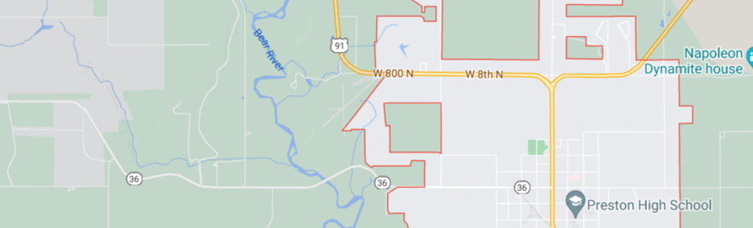

<!DOCTYPE html>
<html lang="en">

<head>
    <meta charset="UTF-8">
    <meta http-equiv="X-UA-Compatible" content="IE=edge">
    <meta name="viewport" content="width=device-width, initial-scale=1.0">
    <link rel="stylesheet" href="css/normalize.css">
    <link rel="stylesheet" href="css/small.css">
    <link rel="stylesheet" href="css/medium.css">
    <link rel="stylesheet" href="css/large.css">
    

    <title>Lazyload</title>
</head>
</html>
<main>
<body>
    <h1>Lazy Load with Intersection Observer </h1>
    <div class="lazymontage">
        <figure>
            

            <figcaption>A freshly harvested hay field</figcaption>
        </figure>

        <figure>
            

            <figcaption>The clouds pile high over the mountain</figcaption>
        </figure>

        <figure>
            

            <figcaption>Dirt biking at the dunes</figcaption>
        </figure>

        <figure>
            
            <figcaption>A welcome rain</figcaption>
        </figure>

        <figure>
            
            <figcaption>Buffalo roam the Northern areas</figcaption>
        </figure>

        <figure>

            
            <figcaption>Souther Idaho in spring</figcaption>
        </figure>

           <figure>
            
            <figcaption>The Prairie in the East</figcaption>
        </figure>

        <figure>

            
            <figcaption>The prairie after the rain</figcaption>
        </figure>

           <figure>
            
            <figcaption>Lakes and Sky are a beautiful combination</figcaption>
        </figure>

    </div>
</main>

    <!-- FOOTER HERE -->
    
    <footer>
        <date></date>
        <div class="contact"><h2> Contact Information</h2><br> &#9742 907-205-9010 <br> &#128231: mmchadwick@gci.net</div>

            
           
        </div>
        </div>
        <p>&copy; Weather Brother|Mandy Chadwick|WDD 230|BYUI </p>


        <div class="social">
            <a href="https://www.facebook.com" target="_blank">
          
          
              
            </a>
          
           <a href="https://www.instagram.com" target="_blank">
            
          </a>
            
            <a href="https://www.youtube.com" target="_blank">
            
              </a>
          </div>


    </footer>


</body>
<script src="script/javascript.js"></script>

</html>
<!--
